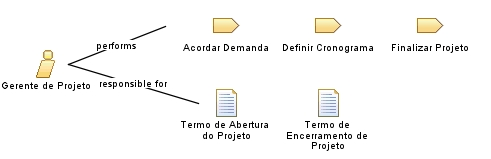

| Role: Gerente de Projeto |
 |
|
Relationships
 |
||
| Primary Performs | ||
|---|---|---|
| Additionally Performs | ||
| Modifies |
|
|
| Process Usage | ||
Main Description
| O Gerente de Projeto é responsável por planejar, executar e monitorizar o projeto de implantação do sistema, garantindo que ele seja entregue dentro do prazo, do orçamento e com a qualidade esperada. Este papel está alocado na DDS. |
Staffing
| Skills | Gerenciamento de projetos (PMBOK/práticas ágeis); Planeamento estratégico; Gestão de riscos; Comunicação; Liderança; Negociação. |
|---|